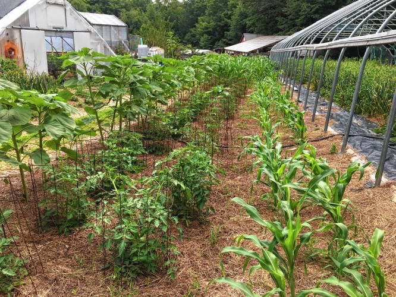

Seeds of Solidarity

165 Chestnut Hill Rd
Orange, Massachusetts
01364-1078
Phone: (978) 544-9023
Farm
 Seeds of Solidarity Farm was initiated in 1996, on land in the middle of the forest that had not been cultivated for many years, and the original inhabitants of the region being the Wampanoag, Nipmuc, and Pequoit people. A conservation restriction on our 30 acres ensures the land will always be used for agriculture, education, and wildlife habitat. With nature as teacher, the land has been transformed into fertile fields and hosts 5 solar hoophouses brimming with our signature greens, fruit and perennial crops, garlic and sacred, traditional crops such as Hopi blue and Narraganset flour corn. The tapestry of our site includes energy efficient and off the grid home, office, and farm outbuildings, including Solidarity Handworks, a solar powered farmstand, and celebration art and words of inspiration along the paths.
Seeds of Solidarity
165 Chestnut Hill Rd
Orange, Massachusetts
01364-1078
Phone: (978) 544-9023